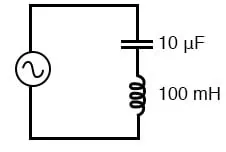
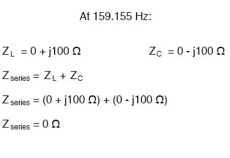
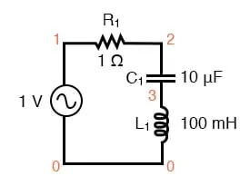
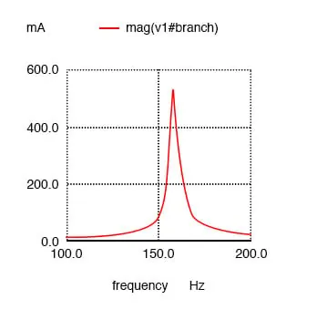
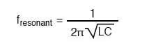
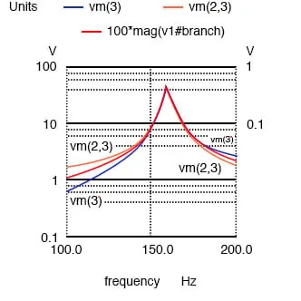

A similar effect happens in series inductive/capacitive circuits. When a state of resonance is reached (capacitive and inductive reactances equal), the two impedances cancel each other out and the total impedance drops to zero! Example:

Simple series resonant circuit.

With the total series impedance equal to 0 Ω at the resonant frequency of 159.155 Hz, the result is a short circuit across the AC power source at resonance. In the circuit drawn above, this would not be good.
I’ll add a small resistor (Figure below) in series with the capacitor and the inductor to keep the maximum circuit current somewhat limited, and perform another SPICE analysis over the same range of frequencies.

Series resonant circuit suitable for SPICE.
series lc circuit v1 1 0 ac 1 sin r1 1 2 1 c1 2 3 10u l1 3 0 100m .ac lin 20 100 200 .plot ac i(v1) .end

Series resonant circuit plot of current I(v1).
As before, circuit current amplitude increases from bottom to top, while frequency increases from left to right. The peak is still seen to be at the plotted frequency point of 157.9 Hz, the closest analyzed point to our predicted resonance point of 159.155 Hz.
This would suggest that our resonant frequency formula holds as true for simple series LC circuits as it does for simple parallel LC circuits, which is the case:

A word of caution is in order with series LC resonant circuits: because of the high currents which may be present in a series LC circuit at resonance, it is possible to produce dangerously high voltage drops across the capacitor and the inductor, as each component possesses significant impedance.
We can edit the SPICE netlist in the above example to include a plot of voltage across the capacitor and inductor to demonstrate what happens.
series lc circuit v1 1 0 ac 1 sin r1 1 2 1 c1 2 3 10u l1 3 0 100m .ac lin 20 100 200 .plot ac i(v1) v(2,3) v(3) .end

Plot of Vc=V(2,3) 70 V peak, VL=v(3) 70 V peak, I=I(V1#branch) 0.532 A peak.
According to SPICE, the voltage across the capacitor and inductor reaches a peak somewhere around 70 volts!
This is quite impressive for a power supply that only generates 1 volt. Needless to say, caution is in order when experimenting with circuits such as this. The SPICE voltage is lower than the expected value due to the small (20) number of steps in the AC analysis statement (.ac lin 20 100 200). What is the expected value?
Given: fr = 159.155 Hz, L = 100mH, R = 1 XL = 2πfL = 2π(159.155)(100mH)=j100Ω XC = 1/(2πfC) = 1/(2π(159.155)(10µF)) = -j100Ω Z = 1 +j100 -j100 = 1 Ω I = V/Z = (1 V)/(1 Ω) = 1 A VL = IZ = (1 A)(j100) = j100 V VC = IZ = (1 A)(-j100) = -j100 V VR = IR = (1 A)(1)= 1 V Vtotal = VL + VC + VR Vtotal = j100 -j100 +1 = 1 V
The expected values for capacitor and inductor voltage are 100 V. This voltage will stress these components to that level and they must be rated accordingly. However, these voltages are out of phase and cancel, yielding a total voltage across all three components of only 1 V, the applied voltage. The ratio of the capacitor (or inductor) voltage to the applied voltage is the “Q” factor.
Q = VL/VR = VC/VR
REVIEW: